Change the Shell To Execute
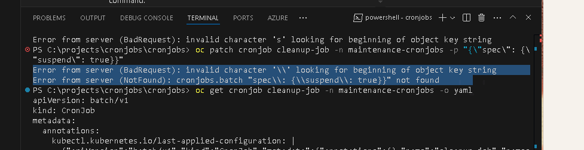
Swap
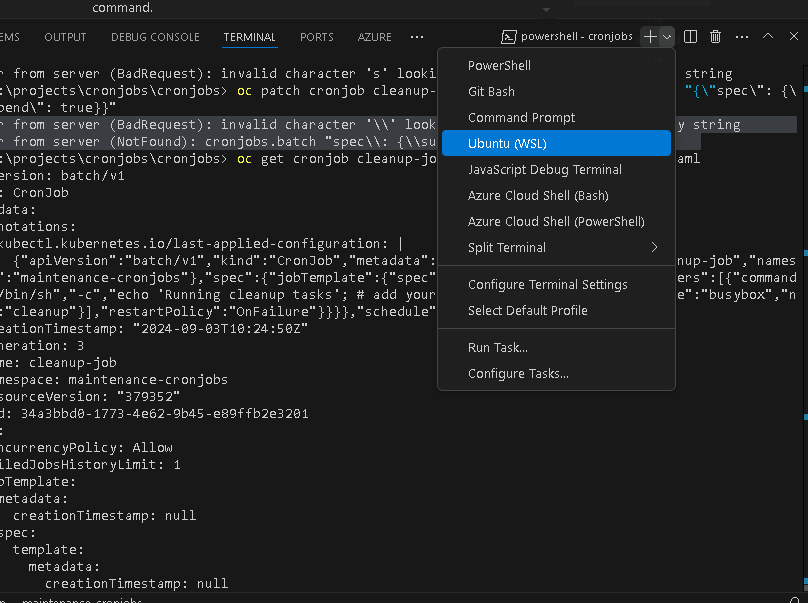
The guidance you provided for patching a Kubernetes CronJob using the oc or kubectl command in PowerShell is thorough and accurate. Here’s a brief recap with additional clarifications and tips to ensure the process goes smoothly:
Summary of Key Points:
-
Command Syntax in PowerShell:
-
Single Quotes: Use single quotes around the JSON payload to avoid escaping double quotes. This is generally simpler and avoids common syntax errors.
-
Double Quotes with Escapes: If you choose to use double quotes for the JSON string, remember to escape each double quote inside the JSON payload.
-
Namespace Specification:
-
Always specify the namespace using
-n <namespace>to ensure the command is executed on the correct resource, especially in environments where the current namespace might differ. -
Verification:
-
After executing the patch command, verify that the
suspendfield is set totrueby fetching the cron job's YAML representation.
Additional Tips:
- Using WSL (Windows Subsystem for Linux):
If you are using WSL instead of PowerShell, the command syntax is slightly different because WSL is more Unix-like. In WSL, you would typically use the regular single or double quotes without escaping, as you would in a standard Linux shell:
oc patch cronjob cleanup-job -n maintenance-cronjobs -p '{"spec": {"suspend": true}}'
-
Handling JSON and YAML Formats:
-
In some cases, using a YAML file to patch resources might be more readable, especially for larger patches. This is how you could create a YAML patch file:
spec: suspend: trueAnd then apply it with:
oc patch cronjob cleanup-job -n maintenance-cronjobs --patch "$(Get-Content -Raw -Path patch.yaml)"
-
Troubleshooting:
-
If the command fails, double-check for any unexpected characters or extra spaces in the command. Additionally, ensure that your OpenShift CLI (
oc) is correctly configured to interact with your cluster (check withoc whoami). -
If you're using Kubernetes with
kubectlinstead of OpenShift withoc, the commands and syntax remain the same.
By following these instructions, you should be able to patch the CronJob successfully in various environments, whether using PowerShell or WSL.
wsl open up. mounted the windows location
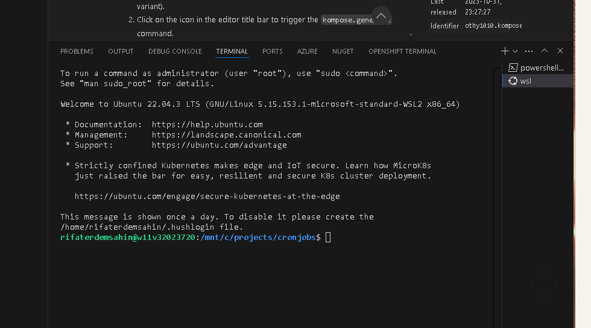
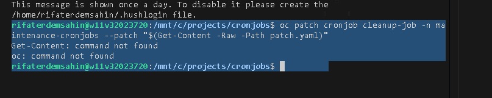
To install the OpenShift CLI (oc) from a specific container image using wget isn't directly possible, as wget is typically used to download files from URLs rather than pulling container images. However, you can pull the OpenShift CLI from the container image specified using a container runtime like docker or podman. Below are the steps to do this:
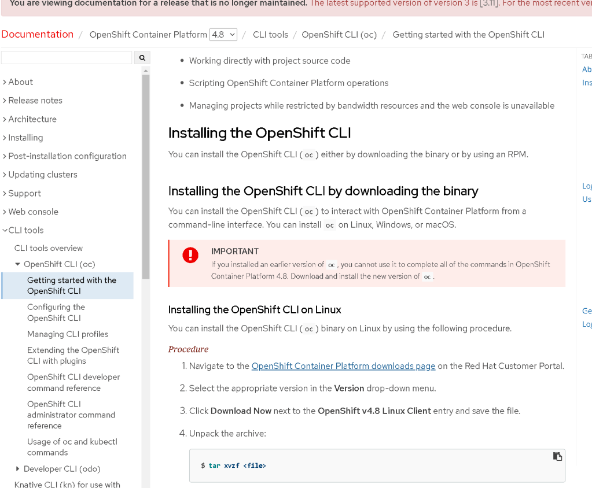
1. Pulling the OpenShift CLI Using Docker or Podman
First, you'll need to have either Docker or Podman installed on your system. Once you have a container runtime, follow these steps to extract the OpenShift CLI (oc) from the container image:
Using Docker:
- Pull the Container Image: Run the following command to pull the image containing the OpenShift CLI:
docker pull quay.io/openshift/okd-content@sha256:2720e98c9d04bb1b191c1dcac9fea8bff40c1701dd91f721101f4f4fb43576e0
- Create a Container from the Image: Next, create a container from this image. Use a temporary container to extract the binary:
docker create --name oc-cli quay.io/openshift/okd-content@sha256:2720e98c9d04bb1b191c1dcac9fea8bff40c1701dd91f721101f4f4fb43576e0
- Copy the
ocBinary from the Container: Copy theocbinary from the container to your host system:
docker cp oc-cli:/usr/bin/oc ./oc
- Move the
ocBinary to a Directory in Your PATH: Move theocbinary to/usr/local/binand make it executable:
sudo mv ./oc /usr/local/bin/oc
sudo chmod +x /usr/local/bin/oc
- Remove the Temporary Container: Clean up by removing the temporary container:
docker rm oc-cli
Using Podman:
If you prefer to use podman instead of docker, the steps are nearly identical, just replace docker with podman in the commands.
2. Verify the Installation
After moving the binary to your PATH, verify the installation with:
oc version
3. Alternative Method: Direct Download
If you want to avoid using containers, you can directly download the OpenShift CLI (oc) from a release page:
-
Find the Latest OKD Release: Visit the OpenShift Origin releases page to find the latest release suitable for your operating system.
-
Download the CLI for Linux: Use
wgetto download the tarball for the Linux release:
wget https://github.com/openshift/origin/releases/download/
Replace <release-version> and <version> with the appropriate values from the releases page.
- Extract and Install: Extract the downloaded tarball and move the
ocbinary to/usr/local/bin:
tar -xvzf openshift-origin-client-tools-
sudo mv openshift-origin-client-tools-
sudo chmod +x /usr/local/bin/oc
- Cleanup: Remove the downloaded tarball and extracted folder:
rm -rf openshift-origin-client-tools-
By following these steps, you should be able to install the oc CLI using either method.
Similar Problem and Repo is there with md format
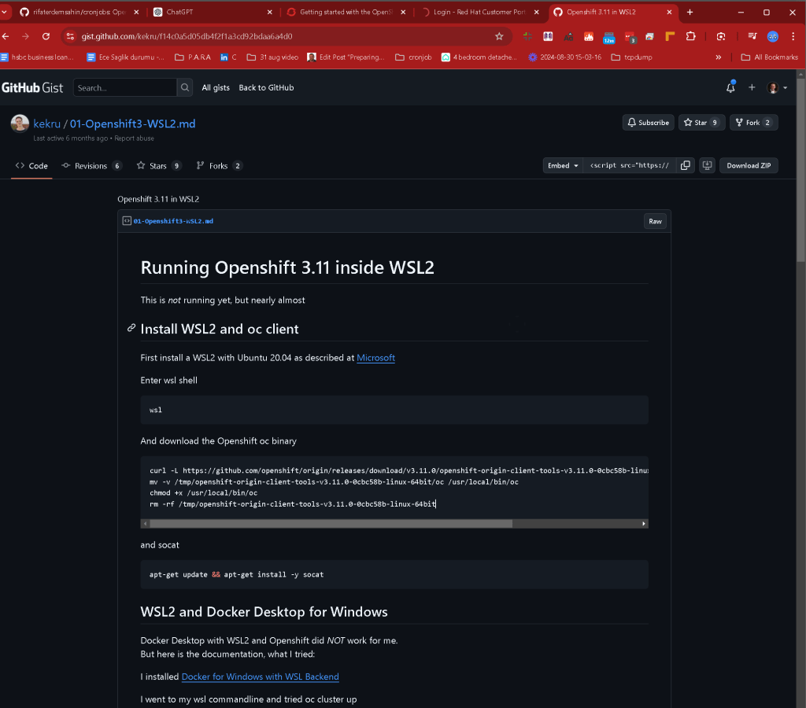
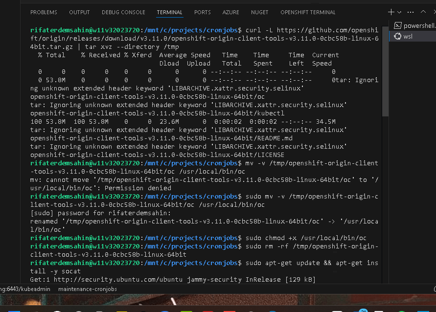
Docker inside running is also a case?
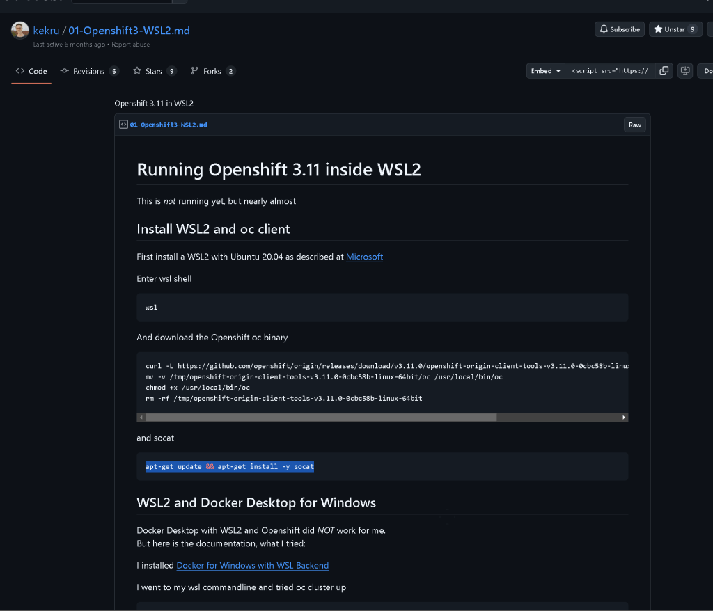
oc works
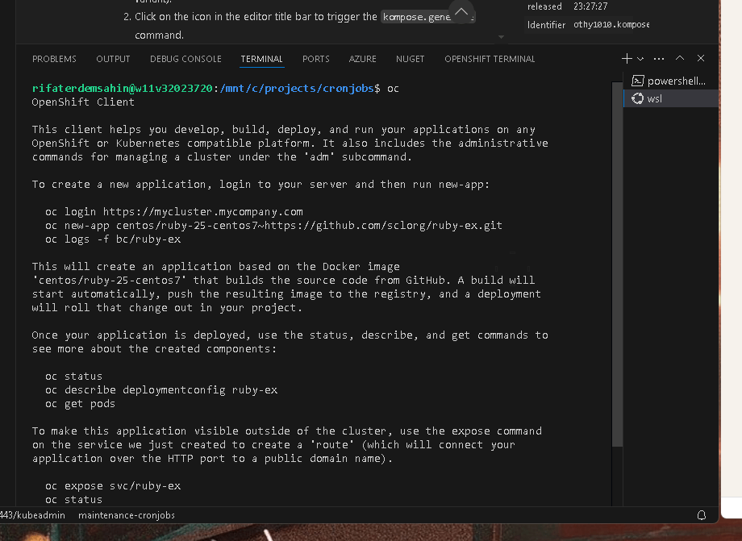
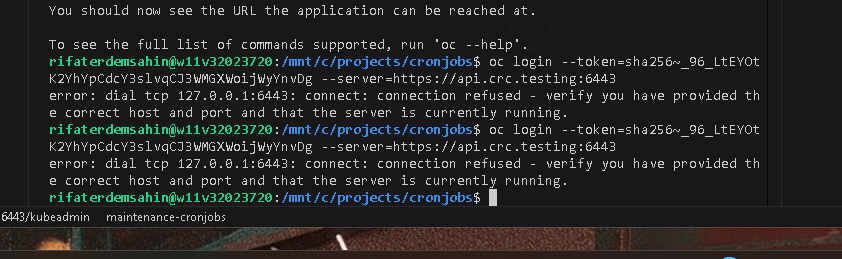
sudo did not work
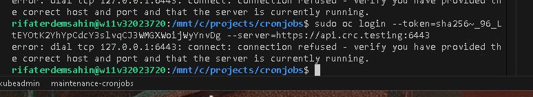
The error message you're encountering indicates that the oc login command cannot connect to the OpenShift API server at https://api.crc.testing:6443. The error dial tcp 127.0.0.1:6443: connect: connection refused suggests that either the server is not running, the hostname cannot be resolved, or the port is not open/accessible from your environment.
Here are several steps you can take to troubleshoot and resolve this issue:
1. Verify OpenShift Cluster Status
Ensure that your OpenShift cluster is running. If you're using CodeReady Containers (CRC) on your local machine:
- Start the CRC Cluster: If you haven't already, start your CRC cluster with:
crc start
This command will start your OpenShift cluster locally if it is installed correctly. Ensure there are no errors during startup.
- Check Cluster Status: After starting, you can verify the status with:
crc status
This command will confirm whether the cluster is running or if there are any issues.
2. Check Network Connectivity and DNS Resolution
- Verify DNS Resolution: Check if the hostname
api.crc.testingresolves correctly. Run the following command in your WSL terminal:
nslookup api.crc.testing
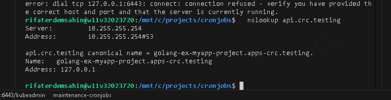
If it does not resolve, there may be an issue with your DNS settings or how your WSL network is configured.
- Test Network Connectivity: Verify if the port
6443is accessible:
curl -k https://api.crc.testing:6443
If you receive an error (like connection refused), it indicates a network issue or that the OpenShift API server isn't listening on that port.
3. Ensure Correct oc and Cluster Configuration
- Verify
ocConfiguration: Check ifocis correctly configured and pointing to the right context. You can list contexts with:
oc config get-contexts
And see the current context with:
oc config current-context
- Reconfigure Cluster Host Entries: Sometimes, WSL needs explicit host entries to resolve DNS names correctly. Check your
/etc/hostsfile to ensure thatapi.crc.testingis mapped to the correct IP address (usually127.0.0.1or a CRC-specific IP). Open and edit your/etc/hostsfile:
sudo nano /etc/hosts
Add the following line if it's missing or incorrect:
127.0.0.1 api.crc.testing
Save and exit.
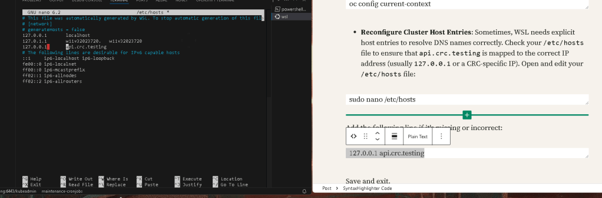
4. Check Firewall and Network Settings
Ensure that any firewall or network security settings on your host machine are not blocking connections. Since CRC typically runs on a VM or container within your host, make sure traffic is allowed through port 6443.
- Check Windows Firewall Settings: Make sure your Windows Firewall or any antivirus software is not blocking connections to
127.0.0.1on port6443.
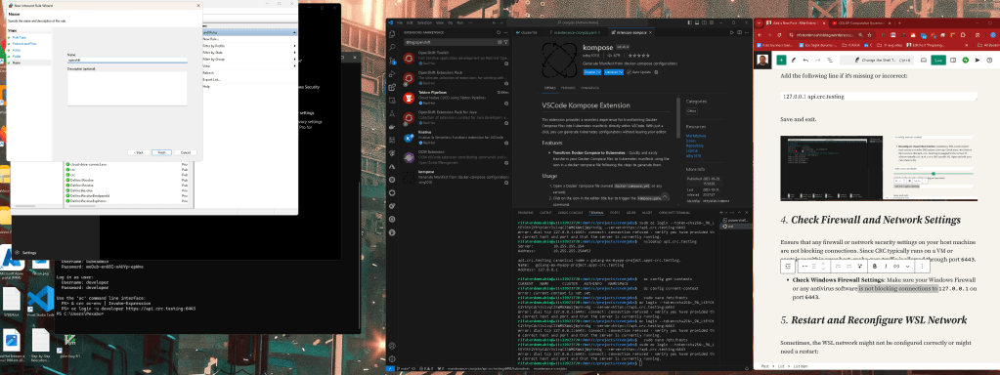
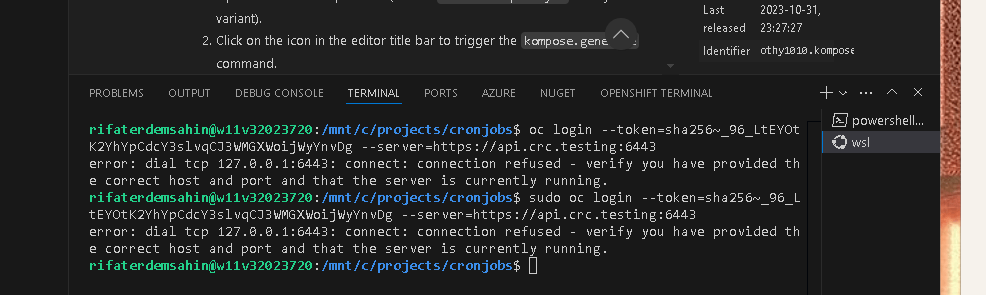
5. Restart and Reconfigure WSL Network
Sometimes, the WSL network might not be configured correctly or might need a restart:
- Restart WSL: Restart the WSL service with the following commands in PowerShell (Run as Administrator):
wsl --shutdown
wsl
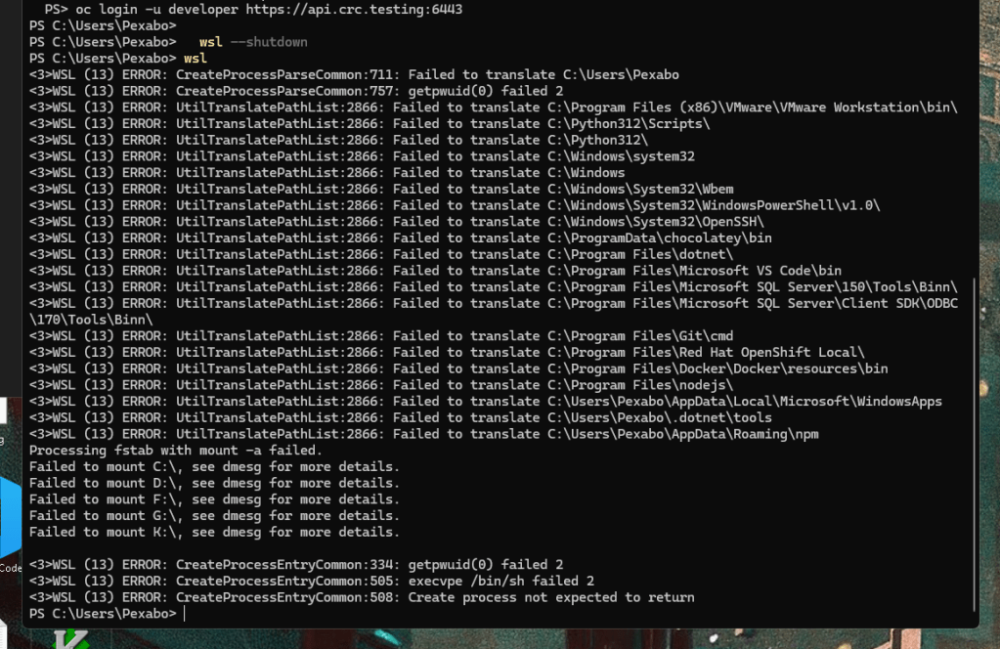
ubuntu on
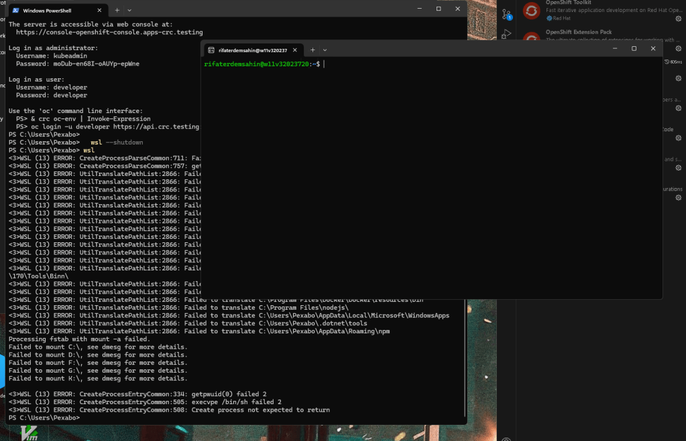
- Reconfigure WSL Networking: Ensure WSL is correctly configured to use your host's network. Check
/etc/resolv.conffor DNS settings or modify network adapter settings in Windows if necessary.
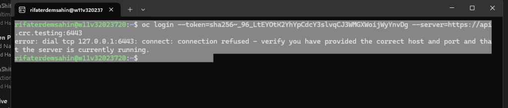
6. Re-login with oc
After ensuring your CRC and WSL environments are correctly set up, try logging in again with:
sudo oc login --token=sha256~_96_LtEYOtK2YhYpCdcY3slvqCJ3WMGXWoijWyYnvDg --server=https://api.crc.testing:6443
Summary
By following these steps, you should be able to diagnose the root cause of the connection issue to your OpenShift cluster. Focus on verifying that your cluster is running and that DNS and networking configurations are correctly set up for both your host and WSL environments.
The error you're encountering, dial tcp 127.0.0.1:6443: connect: connection refused, indicates that the oc login command cannot reach the OpenShift server at the specified address and port. This issue often arises from network configuration problems in WSL (Windows Subsystem for Linux).
To address this, let's go through a few steps to troubleshoot and reconfigure your WSL networking setup:
1. Check if WSL is Using the Correct DNS
The content of your /etc/resolv.conf file suggests that WSL is set to automatically generate DNS settings. The current DNS server (10.255.255.254) may not be correct for reaching the OpenShift API server.
To use the correct DNS, follow these steps:
- Open
/etc/wsl.confwith a text editor likenanoorvim:
sudo nano /etc/wsl.conf
- If the file doesn't exist, create it and add the following content:
[network]
generateResolvConf = false
- Save and close the file.
2. Manually Set DNS in /etc/resolv.conf
After modifying /etc/wsl.conf, you need to set up your DNS manually:
- Stop WSL and remove the current
/etc/resolv.conffile:
wsl --shutdown
sudo rm /etc/resolv.conf
- Restart WSL and recreate
/etc/resolv.confwith your preferred DNS server:
sudo bash -c "echo 'nameserver 8.8.8.8' > /etc/resolv.conf"
You can replace 8.8.8.8 with any other DNS server of your choice (e.g., your internal DNS or another public DNS like 1.1.1.1).
3. Restart WSL
Restart WSL to apply the changes:
wsl --shutdown
wsl
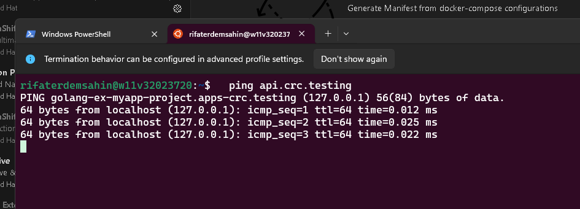
4. Verify OpenShift Server Accessibility
Ensure that the OpenShift server (https://api.crc.testing:6443) is accessible:
- Try pinging the server from WSL to check connectivity:
ping api.crc.testing
- If ping is successful, check if you can reach the server on the specific port:
curl -k https://api.crc.testing:6443
If you see an output or even an SSL error (since you're using -k), it means the server is reachable.
5. Check Windows Firewall and Network Adapter Settings
If you still face issues, make sure your Windows firewall or any network adapter settings aren't blocking traffic between WSL and the external network:
-
Open Windows Defender Firewall settings.
-
Check if there are any rules blocking WSL or network traffic to
api.crc.testing. -
If necessary, adjust the rules to allow the required connections.
6. Verify the OpenShift Server Status
Ensure the OpenShift server is running and accessible:
- Check if the OpenShift server is up and listening on port 6443. You may need to access the server or host machine directly to verify this.
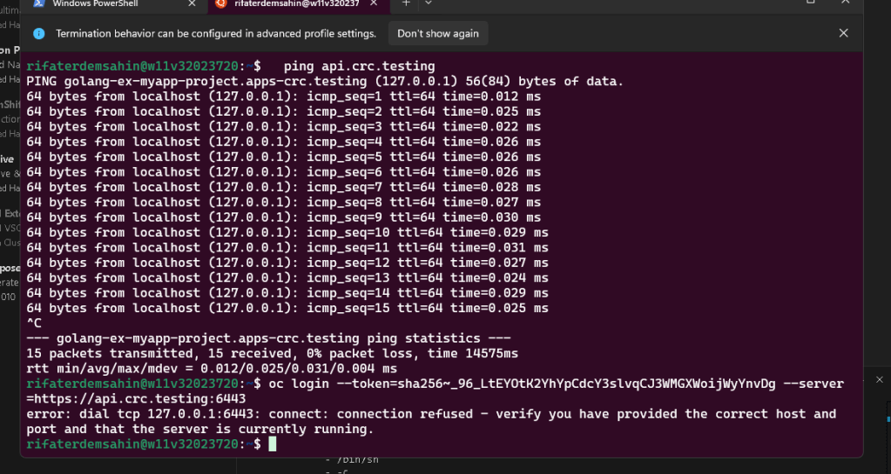
Summary
After making these changes, try running the oc login command again. If the server is still not reachable, you might need to check additional settings in both WSL and your network configuration or ensure that the OpenShift server itself is properly running and accessible.
Logs in the windows not in WSL
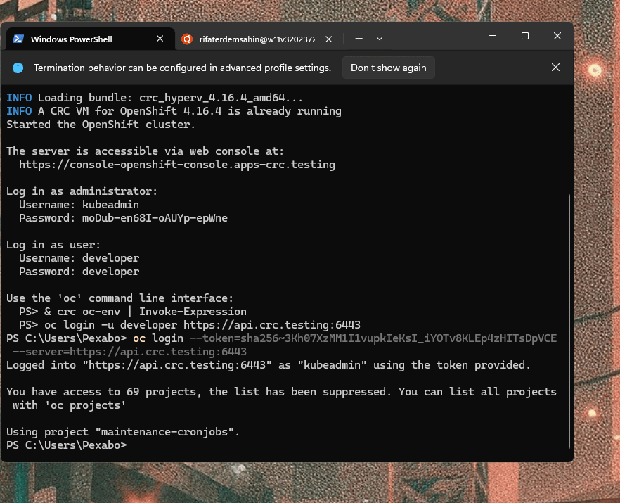
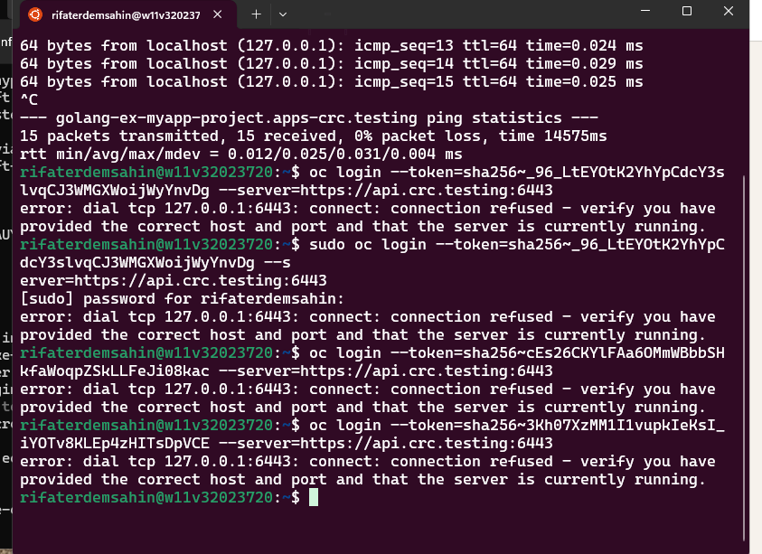
The issue you're experiencing where oc login works in Windows PowerShell but not in WSL (Windows Subsystem for Linux) is likely due to differences in network configurations between the two environments. Here are some common reasons and solutions:
Reasons for the Issue:
-
Network Configuration in WSL:
-
WSL uses a different network interface than Windows. The connection refusal (
dial tcp 127.0.0.1:6443: connect: connection refused) suggests that WSL might be trying to connect to127.0.0.1(localhost) instead of the actual external IP of your OpenShift cluster. -
Firewall or Proxy Settings:
-
Windows firewall or any network security software might allow connections from PowerShell but block them from WSL.
-
WSL Version and DNS Resolution:
-
WSL 1 and WSL 2 handle networking differently. WSL 2 uses a virtualized network interface, which can sometimes lead to issues with DNS resolution or network access.
-
Configuration Differences:
-
If your WSL environment lacks certain network tools or has different DNS settings, it might not be able to resolve the
api.crc.testingdomain correctly.
Possible Solutions:
-
Check Network Interface in WSL:
-
Run
ifconfigorip ain WSL to see your network interfaces. Make sure you have an interface that can reach external networks. -
Try accessing the OpenShift API server using its external IP instead of
localhostor127.0.0.1. -
Update /etc/hosts in WSL:
-
If DNS resolution is an issue, add an entry for
api.crc.testingin your/etc/hostsfile in WSL pointing to the correct IP address of your OpenShift cluster. -
Disable Firewall Temporarily:
-
Temporarily disable any firewalls or network security software in Windows to see if that resolves the issue. Ensure you enable them afterward for security.
-
Use WSL 2 and Update WSL:
-
If you're using WSL 1, consider upgrading to WSL 2, which has better network support. You can upgrade using:
bash wsl --set-version <distribution name> 2 -
Update WSL to the latest version to ensure you have all the recent fixes and improvements.
-
Set Up Port Forwarding in WSL:
-
You might need to set up port forwarding from the Windows network interface to the WSL interface if WSL cannot directly access the network.
Additional Steps:
-
Run
ping api.crc.testingin both Windows PowerShell and WSL to see if both environments resolve to the same IP. -
Check if the
occommand and other required tools are correctly configured in your WSL environment.
By addressing these points, you should be able to diagnose and potentially resolve the connectivity issue in WSL.
`PS C:\Users\Pexabo> bash wsl --set-version ubuntu 2
<3>WSL (16) ERROR: CreateProcessParseCommon:711: Failed to translate C:\Users\Pexabo
<3>WSL (16) ERROR: CreateProcessParseCommon:757: getpwuid(0) failed 2
<3>WSL (16) ERROR: UtilTranslatePathList:2866: Failed to translate C:\Program Files (x86)\VMware\VMware Workstation\bin\
<3>WSL (16) ERROR: UtilTranslatePathList:2866: Failed to translate C:\Python312\Scripts\
<3>WSL (16) ERROR: UtilTranslatePathList:2866: Failed to translate C:\Python312\
<3>WSL (16) ERROR: UtilTranslatePathList:2866: Failed to translate C:\Windows\system32
<3>WSL (16) ERROR: UtilTranslatePathList:2866: Failed to translate C:\Windows
<3>WSL (16) ERROR: UtilTranslatePathList:2866: Failed to translate C:\Windows\System32\Wbem
<3>WSL (16) ERROR: UtilTranslatePathList:2866: Failed to translate C:\Windows\System32\WindowsPowerShell\v1.0\
<3>WSL (16) ERROR: UtilTranslatePathList:2866: Failed to translate C:\Windows\System32\OpenSSH\
<3>WSL (16) ERROR: UtilTranslatePathList:2866: Failed to translate C:\ProgramData\chocolatey\bin
<3>WSL (16) ERROR: UtilTranslatePathList:2866: Failed to translate C:\Program Files\dotnet\
<3>WSL (16) ERROR: UtilTranslatePathList:2866: Failed to translate C:\Program Files\Microsoft VS Code\bin
<3>WSL (16) ERROR: UtilTranslatePathList:2866: Failed to translate C:\Program Files\Microsoft SQL Server\150\Tools\Binn\
<3>WSL (16) ERROR: UtilTranslatePathList:2866: Failed to translate C:\Program Files\Microsoft SQL Server\Client SDK\ODBC\170\Tools\Binn\
<3>WSL (16) ERROR: UtilTranslatePathList:2866: Failed to translate C:\Program Files\Git\cmd
<3>WSL (16) ERROR: UtilTranslatePathList:2866: Failed to translate C:\Program Files\Red Hat OpenShift Local\
<3>WSL (16) ERROR: UtilTranslatePathList:2866: Failed to translate C:\Program Files\Docker\Docker\resources\bin
<3>WSL (16) ERROR: UtilTranslatePathList:2866: Failed to translate C:\Program Files\nodejs\
<3>WSL (16) ERROR: UtilTranslatePathList:2866: Failed to translate C:\Users\Pexabo\AppData\Local\Microsoft\WindowsApps
<3>WSL (16) ERROR: UtilTranslatePathList:2866: Failed to translate C:\Users\Pexabo.dotnet\tools
<3>WSL (16) ERROR: UtilTranslatePathList:2866: Failed to translate C:\Users\Pexabo\AppData\Roaming\npm
Processing fstab with mount -a failed.
Failed to mount C:\, see dmesg for more details.
Failed to mount D:\, see dmesg for more details.
Failed to mount F:\, see dmesg for more details.
Failed to mount G:\, see dmesg for more details.
Failed to mount K:\, see dmesg for more details.
<3>WSL (16) ERROR: CreateProcessEntryCommon:334: getpwuid(0) failed 2
<3>WSL (16) ERROR: CreateProcessEntryCommon:505: execvpe /bin/bash failed 2
<3>WSL (16) ERROR: CreateProcessEntryCommon:508: Create process not expected to return
PS C:\Users\Pexabo>`
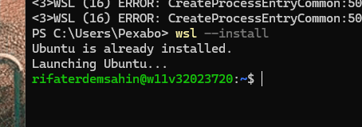
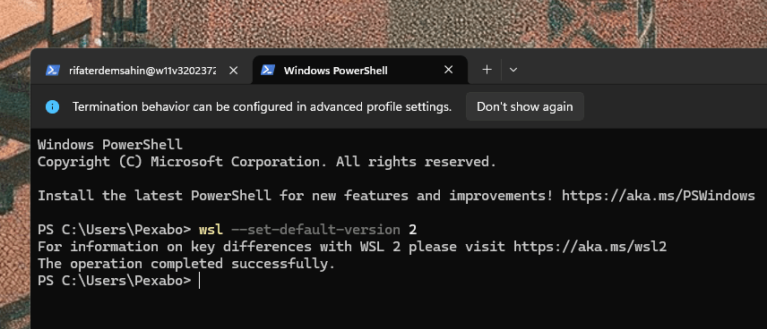
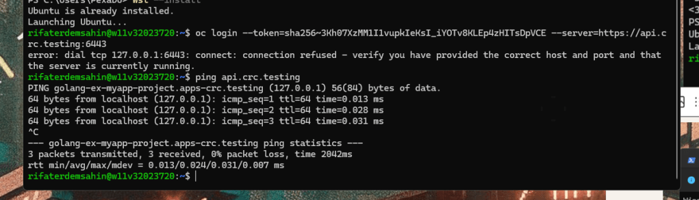
To run the OpenShift Command Line Interface (CLI) tool (oc) using Docker, you can create a Docker container that has the oc CLI installed. The oc CLI allows you to interact with OpenShift clusters. Below are the steps to run the oc CLI in a Docker container.
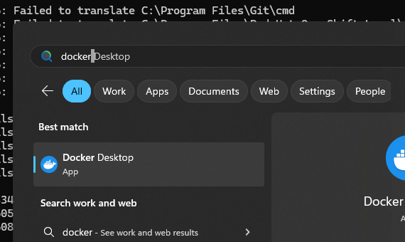
Step-by-Step Instructions
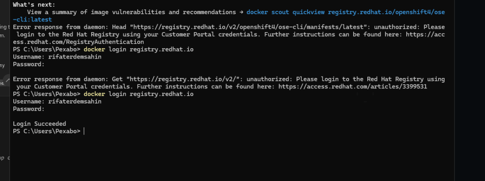
- Pull an Image with
ocInstalled: First, you'll need to find a Docker image that hasocinstalled. If there isn't an official image, you can create one based on a base image likealpineorubuntu. For example, use an image from Red Hat that includesoc:
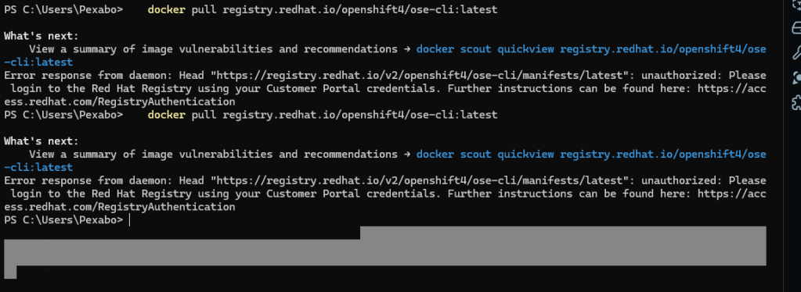
docker pull registry.redhat.io/openshift4/ose-cli:latest
- Run the Docker Container with
ocCLI: Once you have the image, you can run a Docker container using it. To use theoccommand, you can run:
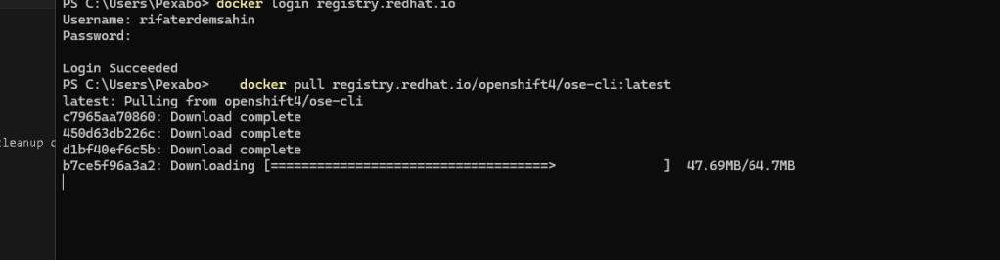
docker run --rm -it registry.redhat.io/openshift4/ose-cli:latest oc
This command will:
-
--rm: Automatically remove the container when it exits. -
-it: Run in interactive mode and allocate a pseudo-TTY. -
registry.redhat.io/openshift4/ose-cli:latest: The Docker image withocinstalled. -
oc: The command you want to run inside the container. -
Run Specific
ocCommands: If you want to run specificoccommands, you can append them at the end of thedocker runcommand. For example, to check the version ofoc:
docker run --rm -it registry.redhat.io/openshift4/ose-cli:latest oc version
- Configure Access to OpenShift Cluster: To interact with an OpenShift cluster, you need to authenticate. You can do this by logging in with the
oc logincommand. To log in, you'll need your OpenShift cluster URL and your credentials:
docker run --rm -it registry.redhat.io/openshift4/ose-cli:latest oc login https://your-openshift-cluster-url -u your-username -p your-password
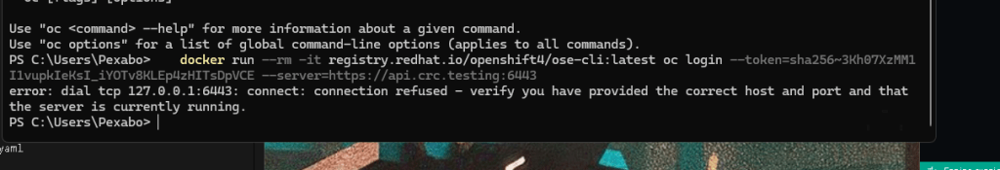
Replace https://your-openshift-cluster-url, your-username, and your-password with your OpenShift cluster's URL and your credentials.
- Use Local
kubeconfigFile: If you have a localkubeconfigfile with your cluster credentials, you can mount it into the Docker container using the-vflag:
docker run --rm -it -v ~/.kube/config:/root/.kube/config:ro registry.redhat.io/openshift4/ose-cli:latest oc get pods
This command mounts your local kubeconfig file into the container, allowing oc to use your local credentials.
Summary
-
Pull the Docker image with
ocinstalled. -
Run the Docker container interactively to use
oc. -
Authenticate using
oc loginor use a localkubeconfigfile.
By following these steps, you should be able to run oc commands using Docker without needing to install oc locally.
The error message you're encountering indicates that you need to authenticate with the Red Hat Container Registry to pull the ose-cli image. The registry requires credentials that are typically tied to a Red Hat Customer Portal account.
Here's how you can authenticate and pull the image:
Step-by-Step Authentication and Pull Process
- Log in to the Red Hat Container Registry: To log in to the registry, use your Red Hat Customer Portal credentials. Run the following command and enter your username and password when prompted:
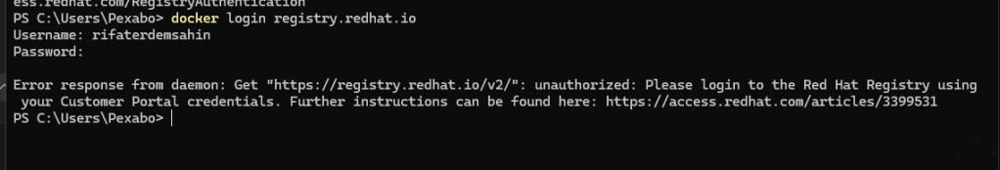
docker login registry.redhat.io
Alternatively, if you're using Windows PowerShell as indicated by your prompt (PS C:\Users\Pexabo>), run:
docker login registry.redhat.io
After running this command, you'll be prompted to enter your Red Hat Customer Portal username and password.
- Pull the
ose-cliDocker Image: Once you are logged in, you can pull theose-cliimage from the Red Hat Container Registry:
docker pull registry.redhat.io/openshift4/ose-cli:latest
If you’re using PowerShell, you can run the same command:
docker pull registry.redhat.io/openshift4/ose-cli:latest
- Run the
ocCommand in a Docker Container: After successfully pulling the image, you can run theoccommands as mentioned earlier. For example:
docker run --rm -it registry.redhat.io/openshift4/ose-cli:latest oc version
This command will start the ose-cli Docker container and execute the oc version command.
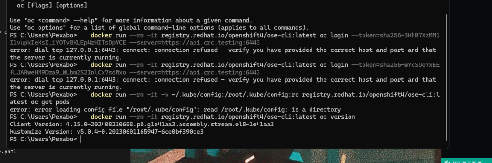
Additional Notes:
-
Red Hat Subscription: To access the images in
registry.redhat.io, you must have a Red Hat subscription tied to your account. -
Storing Credentials: Docker stores credentials locally after you log in. If you wish to log out after pulling the image, you can run:
docker logout registry.redhat.io
- Security: Ensure that your Red Hat Customer Portal credentials are kept secure. If you are using a shared environment or computer, consider logging out after you are done.
By following these steps, you should be able to authenticate to the Red Hat registry, pull the required image, and use the oc command.
Event the container can not be accessed to crc with redhat code ?
PS C:\Users\Pexabo> docker run --rm -it registry.redhat.io/openshift4/ose-cli:latest oc login --token=sha256~wYcSUe7xEEfLJARweHM9Dza9_WLbm2S2InlCx7sdMxo --server=https://api.crc.testing:6443
error: dial tcp 127.0.0.1:6443: connect: connection refused - verify you have provided the correct host and port and that the server is currently running.
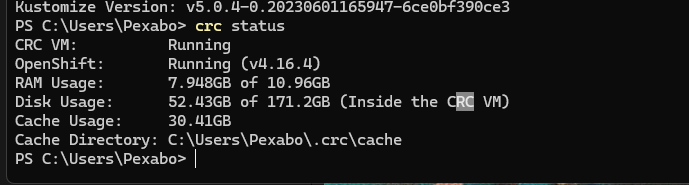
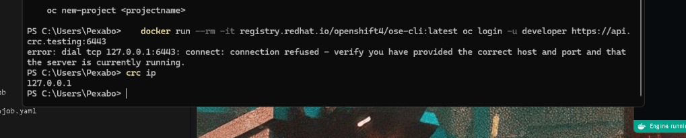
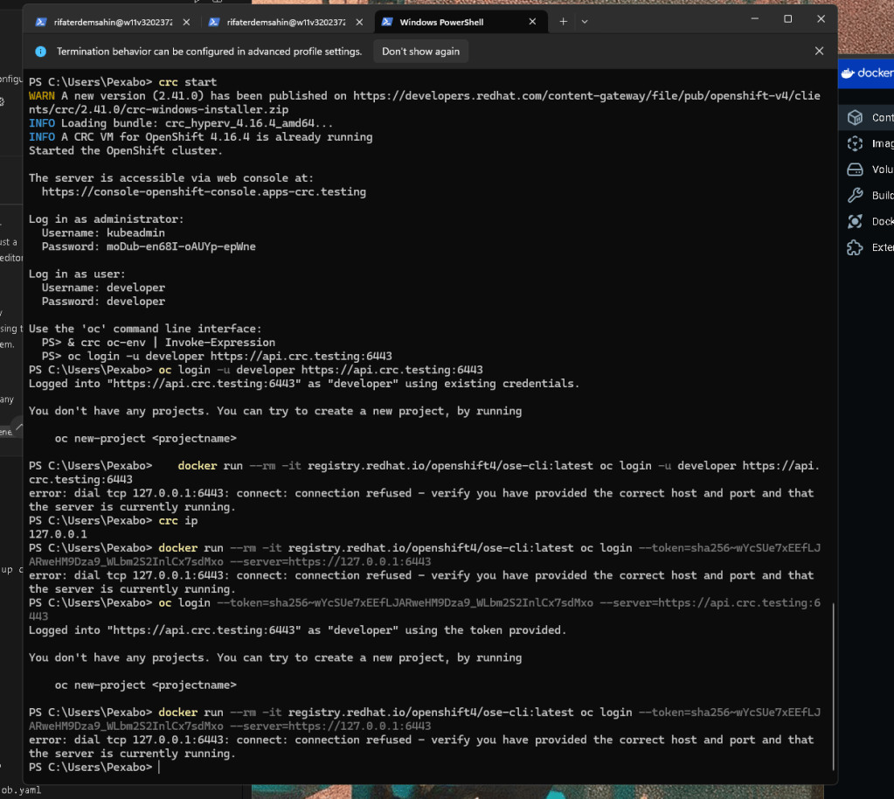
The error message you're encountering (dial tcp 127.0.0.1:6443: connect: connection refused) indicates that the oc CLI tool inside the Docker container is unable to connect to your OpenShift cluster running at https://api.crc.testing:6443. This is likely because the cluster URL (api.crc.testing) is not accessible from within the Docker container due to network or DNS resolution issues.
Potential Causes and Solutions
-
Cluster Not Running:
-
Ensure that your OpenShift local cluster (CRC - CodeReady Containers) is actually running. You can check the status using the CRC CLI:
crc status
If it's not running, start the cluster:
crc start
-
Network Connectivity from Docker to CRC:
-
Docker containers run in an isolated network, and this might prevent the container from accessing the OpenShift cluster on your local machine.
-
The
api.crc.testingdomain needs to be resolvable from within the Docker container. By default, Docker might not have access to this domain since it's likely set up in your local/etc/hostsor through a specific DNS configuration that Docker containers cannot access. Here’s how you can address the connectivity issue: -
Use Host Networking Mode: On Linux, you can use Docker's
--network hostoption to allow the container to share the host's network stack. Unfortunately, this option is not available on Docker for Windows or Mac. Instead, you can explicitly map ports and handle DNS manually. -
Explicitly Set the Host Address:
-
If you are on Windows or Mac, Docker containers typically cannot resolve
api.crc.testingbecause it’s only resolvable on the host machine. You can instead use the IP address directly. Here’s how you can determine the IP address of your CRC cluster and use it in thedocker runcommand: -
Find the CRC IP Address: You can find the IP address of the CRC VM using:
crc ipThis will give you an IP address like192.168.130.11. -
Run the Docker Container with the CRC IP Address: Use this IP address in your
docker runcommand instead ofapi.crc.testing:docker run --rm -it registry.redhat.io/openshift4/ose-cli:latest oc login --token=sha256~wYcSUe7xEEfLJARweHM9Dza9_WLbm2S2InlCx7sdMxo --server=https://192.168.130.11:6443 -
DNS Configuration in Docker:
-
You can modify Docker’s DNS settings to resolve
api.crc.testingproperly by mapping the CRC IP to this hostname. To achieve this, you might want to manually add an entry to Docker’s--add-hostoption. Here’s how:docker run --rm -it --add-host=api.crc.testing:192.168.130.11 registry.redhat.io/openshift4/ose-cli:latest oc login --token=sha256~wYcSUe7xEEfLJARweHM9Dza9_WLbm2S2InlCx7sdMxo --server=https://api.crc.testing:6443Replace192.168.130.11with the actual IP address you obtained usingcrc ip.
Summary
-
Check if CRC is running: Ensure that your CRC instance is running.
-
Use the correct network setup: Make sure Docker has access to the CRC network, either by using host networking (Linux only) or by setting the correct IP address in Docker's options.
-
Explicit IP address usage: Use the IP address directly if DNS resolution does not work within the Docker container.
-
Adjust DNS settings in Docker: Add the necessary host mappings to Docker if you want to use the hostname.
By following these steps, you should be able to resolve the connectivity issue and successfully log in to your OpenShift cluster using the oc CLI within a Docker container.
It looks like you're running Docker on your host machine while the CodeReady Containers (CRC) instance is running inside a Hyper-V virtual machine. In this setup, Docker containers on your host machine cannot directly communicate with the CRC instance because Hyper-V isolates the network of its virtual machines from the host.
Solutions to Allow Docker to Access CRC in Hyper-V
To enable communication between Docker containers and the CRC instance running inside a Hyper-V VM, you have a few options:
1. Expose CRC Ports on the Host Network
You can expose the CRC's API server port (6443) on the host network so Docker containers can access it directly. This involves using port forwarding or setting up the network correctly in Hyper-V.
- Find CRC VM's Internal IP Address: Run the following command in PowerShell to get the CRC IP address:
crc ip
This will give you the IP address used by the CRC instance inside the Hyper-V VM.
- Set Up Port Forwarding in Hyper-V: You can use PowerShell commands to set up a NAT (Network Address Translation) rule to forward traffic from a port on your host machine to the CRC VM's internal IP address and port 6443. Here is how you can do it:
$vmName = "crc" # Replace with your CRC VM name if different
$hostPort = 6443
$vmIpAddress = (Get-VMNetworkAdapter -VMName $vmName | Get-VMNetworkAdapterRoutingDomainMapping).DhcpAssignedIpAddress
$vmPort = 6443
# Create a NAT rule to forward traffic from the host to the CRC VM
Add-NetNatStaticMapping -NatName "HyperVNat" -Protocol TCP -ExternalIPAddress "0.0.0.0" -ExternalPort $hostPort -InternalIPAddress $vmIpAddress -InternalPort $vmPort
This script will forward traffic from port 6443 on your host to port 6443 on the CRC VM.
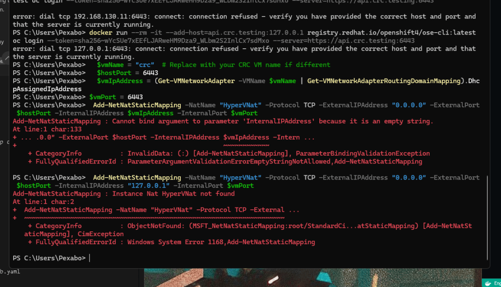
- Use the Host's IP Address in Docker Command: After setting up port forwarding, use your host's IP address and port 6443 when running the Docker command:
docker run --rm -it registry.redhat.io/openshift4/ose-cli:latest oc login --token=sha256~wYcSUe7xEEfLJARweHM9Dza9_WLbm2S2InlCx7sdMxo --server=https://
Replace <your-host-ip> with the actual IP address of your host machine.
2. Use Host Networking for Docker (Linux Only)
If you were on a Linux system, you could use Docker's --network host mode to allow Docker containers to use the host's network stack, making it possible to access api.crc.testing directly. However, this option is not available on Windows.
3. Manually Add Host Entries
If you prefer not to set up port forwarding or if it doesn't suit your environment, you can manually add host entries in your Docker container to resolve the CRC VM's IP address:
- Add Docker Host Entries:
docker run --rm -it --add-host=api.crc.testing:
Replace <crc-ip> with the IP address you obtained from crc ip.
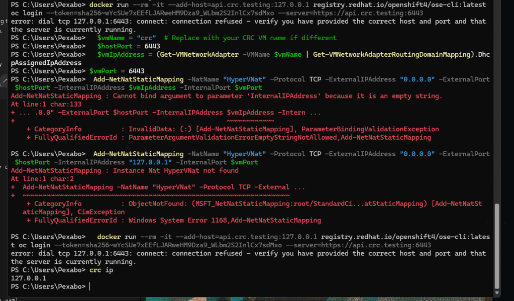
4. Use a Proxy
Set up a simple proxy server on your host machine to forward traffic from the Docker container to the CRC VM. This method involves running a small HTTP proxy server that listens on the host network and forwards requests to the CRC VM.
Summary
To allow Docker containers to access a CRC instance running in Hyper-V:
-
Expose CRC ports on the host by using port forwarding.
-
Use Docker's host networking mode if you are on Linux (not applicable for Windows).
-
Manually add host entries to your Docker command to resolve the CRC IP address.
-
Set up a proxy on your host to forward requests from Docker containers to the CRC VM.
By following one of these methods, you should be able to resolve the network isolation issue and connect to your CRC instance from Docker containers.
Tried 3 to path
1)powershell string error
2)ubuntu access error
3)docker access error
Outline and Summary: Troubleshooting Kubernetes CronJob Patching and OpenShift CLI Connectivity Issues
1. Patching a Kubernetes CronJob in PowerShell
- Command Syntax in PowerShell:
Single Quotes: Use single quotes around the JSON payload to avoid escaping double quotes.
-
Double Quotes with Escapes: Use double quotes with properly escaped internal double quotes if preferred.
-
Namespace Specification: Always specify the namespace using
-n <namespace>to target the correct resource.
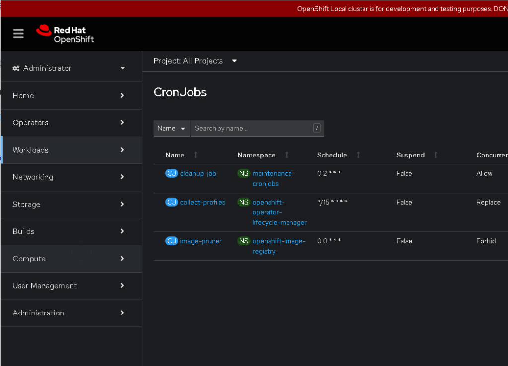
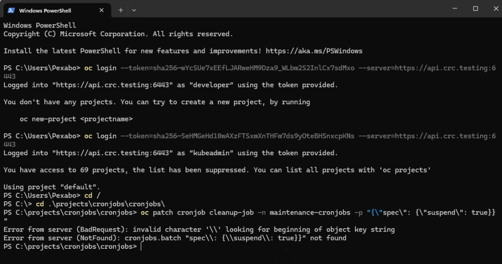
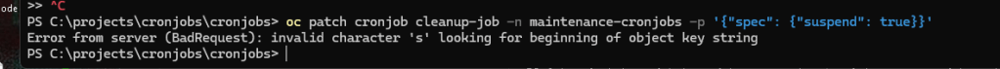
Google stack overflow
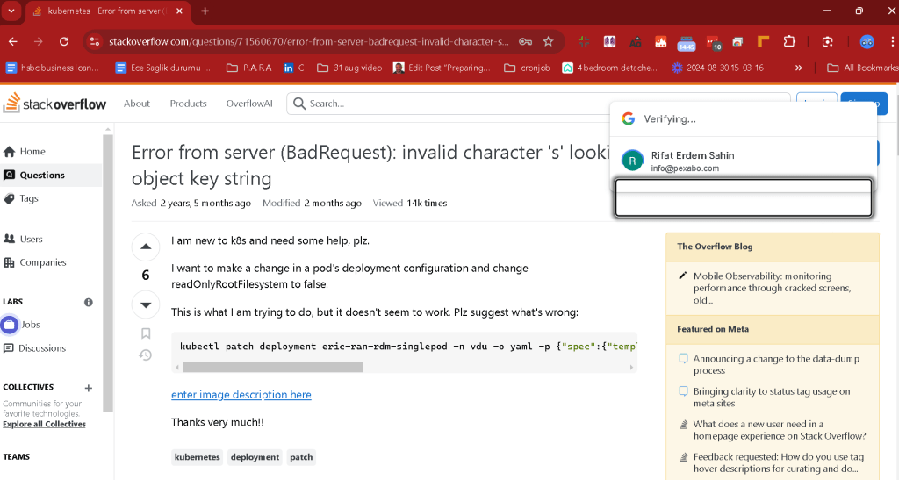
-
Verification: Verify that the
suspendfield is set totrueby fetching the CronJob's YAML after patching. -
Using WSL for Patching:
Different syntax requirements in WSL (Unix-like behavior).
- Handling JSON and YAML Formats:
Use YAML for more readable patches in some cases and apply using oc patch.
- Troubleshooting Tips:
Ensure the oc or kubectl command is properly configured and authenticated.
2. Installing the OpenShift CLI (oc) Using Docker
- Using Docker to Pull and Run
oc:
Pull the container image containing oc using Docker.
-
Run a Docker container to execute
occommands. -
Alternative Method: Direct Download:
Download the OpenShift CLI directly from a release page and manually install it.
- Troubleshooting Installation Issues:
Ensure Docker and Podman are correctly configured.
- Verify proper network connectivity and DNS resolution within the container.
3. Troubleshooting OpenShift Cluster Access Issues
- Error:
connect: connection refusedto OpenShift API:
Check if the OpenShift cluster is running and accessible (crc status and crc start).
- DNS and Network Configuration Issues:
Verify DNS resolution (nslookup) and network connectivity (curl).
- Configuring WSL for Proper Network Access:
Modify /etc/resolv.conf and /etc/hosts for correct DNS settings.
-
Restart WSL to apply network changes.
-
Firewall and Network Settings:
Check Windows Firewall settings to ensure they are not blocking WSL or Docker containers.
- Using Docker to Access OpenShift Cluster:
Run Docker containers with proper network settings to ensure connectivity.
- Common Errors and Solutions:
Address common PowerShell string errors, WSL access errors, and Docker network configuration errors.
4. Advanced Configuration for Docker and OpenShift CLI
- Accessing OpenShift Cluster from Docker:
Address Docker container isolation from the host network.
-
Use host networking mode or manual DNS configuration.
-
Exposing CRC Ports to Docker Containers:
Set up port forwarding in Hyper-V to allow Docker containers to access CRC instances.
- Using Proxies or Additional Network Tools:
Set up a proxy server to forward requests from Docker containers to the CRC VM.
Summary
This guide outlines the steps and considerations for patching a Kubernetes CronJob using PowerShell or WSL, installing and using the OpenShift CLI (oc) through Docker or direct download, and troubleshooting common connectivity issues with OpenShift clusters, especially when accessed from WSL or Docker. The guide also covers advanced networking setups to ensure seamless access to OpenShift environments across different platforms and configurations.
do it with a yaml file ! >>> that is why they do it with yaml!
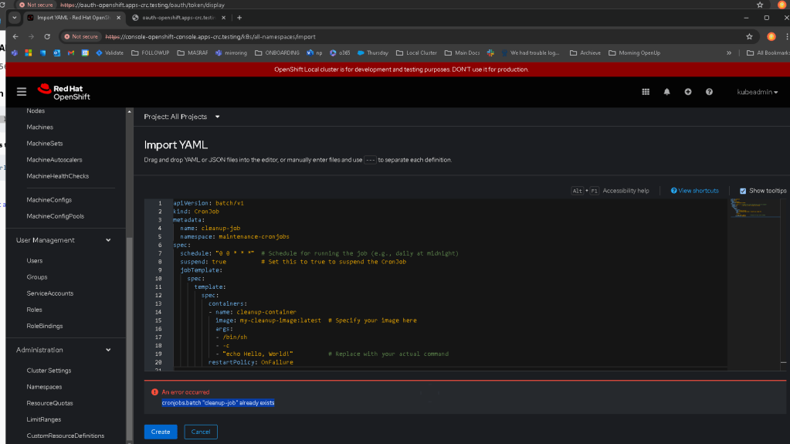
yaml apply ıs the way to go
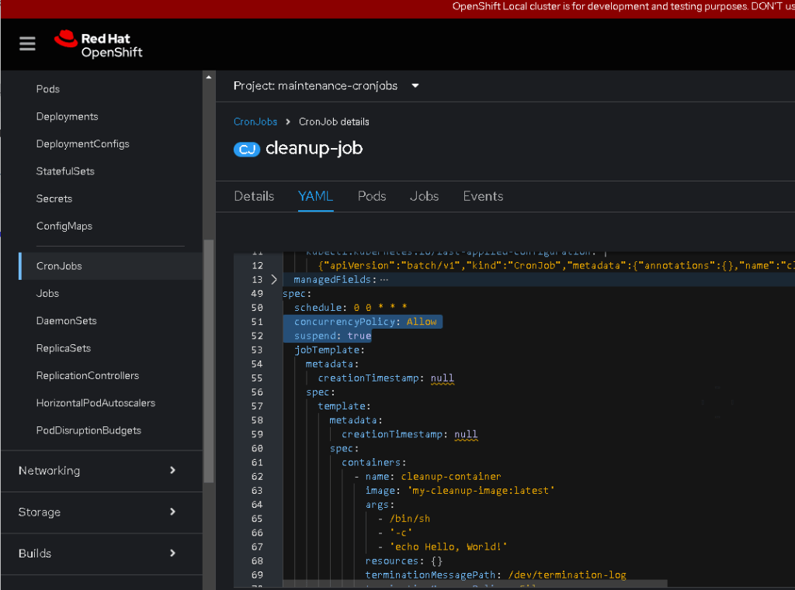
Imported from rifaterdemsahin.com · 2024